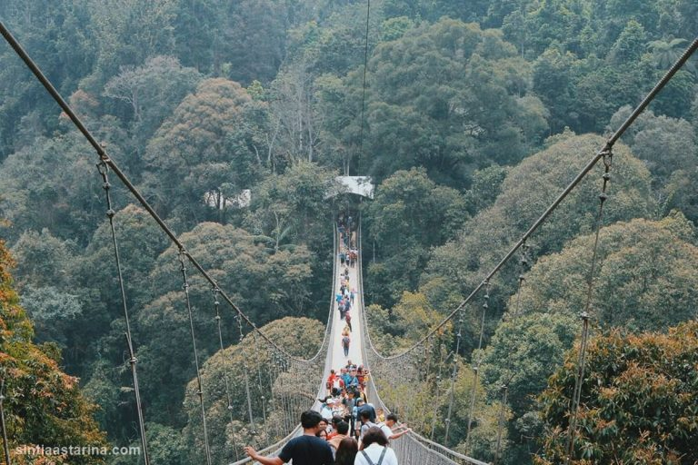
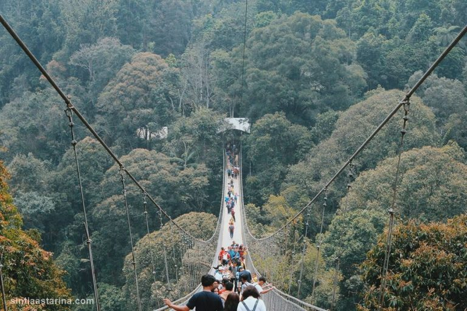

Di sekeliling jembatan, traveler akan melihat bukit hijau dan pepohonan tinggi. Suasana sejuk dan dingin akan menemani perjalanan selama berjalan-jalan di Situ Gunung. Selain itu, jembatan ini juga sangat instagramable untuk berswafoto bersama keluarga atau orang terkasih. Jembatan gantung Situ Gunung Sukabumi ini berbahan dasar kayu ulin atau kayu besi dari Papua. Kayu ulin ini tahan terhadap perubahan suhu, kelembapan, berat, keras dan tentunya antirayap. Tiket masuk ke Situ Gunung mulai dari Rp 50 ribu sampai Rp 100 ribu. Tiket tersebut sudah termasuk biaya masuk ke Curug Sawer, minuman dan camilan welcome drink, berupa kopi atau teh, bakso, bubur kacang, singkong dan pisang rebus sebelum memasuki pintu masuk jembatan.

 


Taman Nasional Gunung Gede Pangrango (TNGGP) seluas 24.270,80 Ha secara administratif berada di tiga kabupaten yaitu Cianjur, Sukabumi dan Bogor. Taman nasional ini merupakan salah satu dari 5 (lima) taman nasional pertama di Indonesia yang diumumkan oleh Menteri Pertanian pada 6 Maret 1980. Sebelum ditetapkan sebagai TNGGP, kelompok hutan tersebut ditetapkan sebagai zona inti Cagar Biosfer Cibodas oleh UNESCO pada Tahun 1977. Kawasan TNGGP memiliki banyak keindahan alam yang berpotensi menjadi objek wisata alam diantaranya berupa air terjun, air panas, gua, jalur pendakian, dan danau. Salah satu dari keindahan-keindahan tersebut adalah Kawasan Situgunung. Jembatan Gantung Situgunung pertama kali dibangun di pertengahan tahun 2017. Proses pembangunan jembatan dilakukan secara manual dengan melibatkan warga lokal dan tenaga ahli dari Bandung. Meskipun tidak menggunakan alat berat, pembangunan jembatan ini selesai dalam kurun waktu kurang dari 1 tahun, lebih tepatnya selama 4 bulan. Untuk keselamatan dan kenyamanan, selama pembangunan, dilakukan pendampingan teknis dari Puslitbang Jalan dan Jembatan – Kementerian PUPR.
Keberadaan Jembatan Gantung Situgunung diharapkan berpengaruh positif bagi warga sekitar. Peran mereka tidak dapat terlepas, mulai dari membangun sampai dengan peran menjalankan fasilitas dan piranti pendukung jembatan panjang itu. Pengangguran terkikis dengan kesibukan mereka menjual makanan dan mendagangkan kerajinan tangan tanpa harus dipungut bayaran sewa. Pengelola juga memupuk semangat warga dengan mengajak mereka beraktitas dalam segala sendi aktitas menuju, melewati dan meninggalkan jembatan gantung itu misalnya sebagai petugas parkir, pelaku seni di Amphiteater, pemasang alat pengaman, petugas kebersihan, dan lain sebagainya. Dede Asad, selaku direktur pengelola Jembatan Gantung Situ Gunung telah memulai bisnisnya di dunia pariwisata sejak tahun 2007. Ketertarikan Dede telah membuat dirinya menjadi seseorang yang berpengaruh dan dapat diandalkan dalam bidang pariwisata. Di tahun 2012, Dede turut serta dalam pembuatan bumi perkemahan, yang dikenal dengan nama Glamping, di dua lokasi di daerah Ciwidey, Bandung Selatan. Proyek Glamping di daerah Ciwidey merupakan proyek pertama dan awal keberhasilannya.